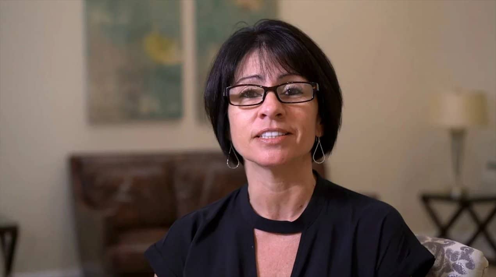

A real patient's story
“My biggest fear was walking around with no teeth while everything healed. I never spent a single day without a smile. And when the permanent teeth went on, they felt like they'd always been mine.
A DreamSmile™ patient · Shenandoah Valley
★★★★★ Rated 5.0 by patients on Google
